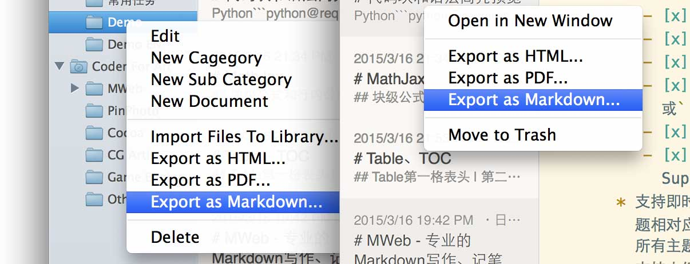

- + space + [ ]or - + space + [x]
CMD + R. TextEdit.CMD + V paste to JPG pictrue, CMD + Shift + V paste to PNG pictrue.CMD + N and CMD + O to create,open external Markdown document.
CMD + Shift + N to create MWeb Library document. CMD + L to open MWeb Documents Library.
Documents Library pattern use categories tree to organize documents, support drag & drop or paste insert pictrue and display immediately. Support import external Markdown or txt document to the library, export a category or documents to HTML, PDF or Markdown.

You can build static blog One Click! Now has two blog themes, it's easy to custom you owner blog theme. you can add AddThis and Disqus code for share and comment support to you blog. You can enable MathJax and Sequence & Flow chart support in category setting.